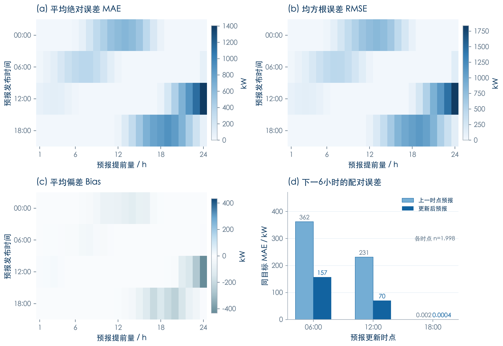
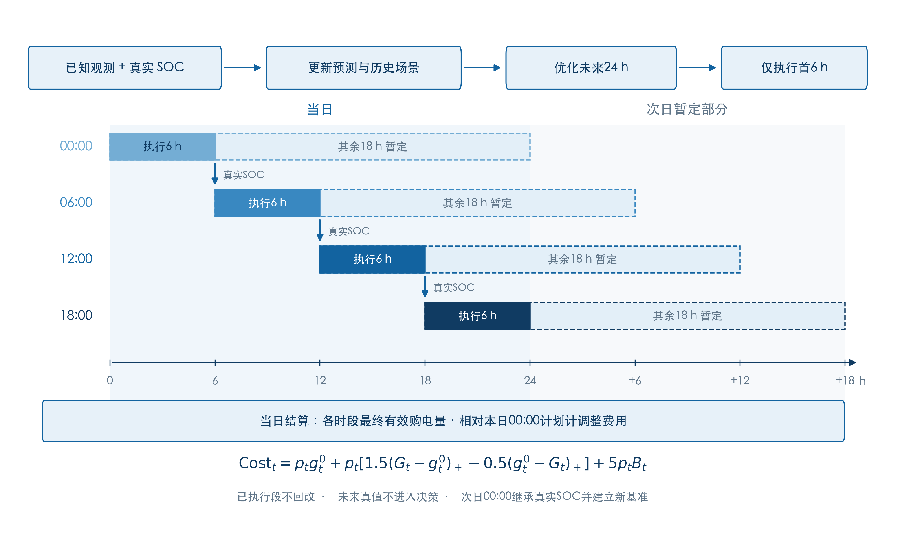
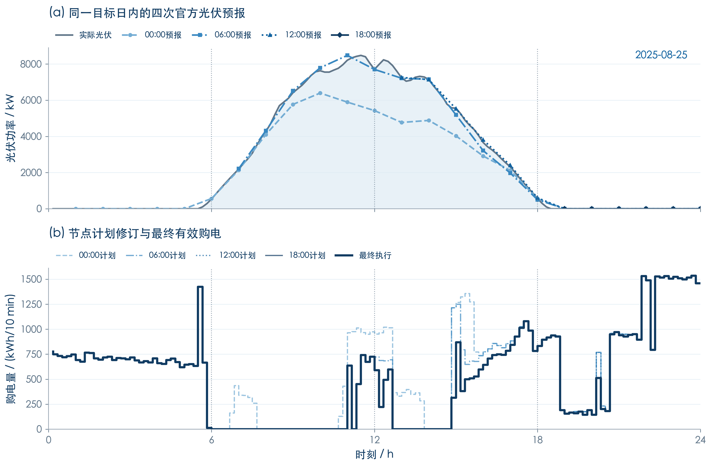
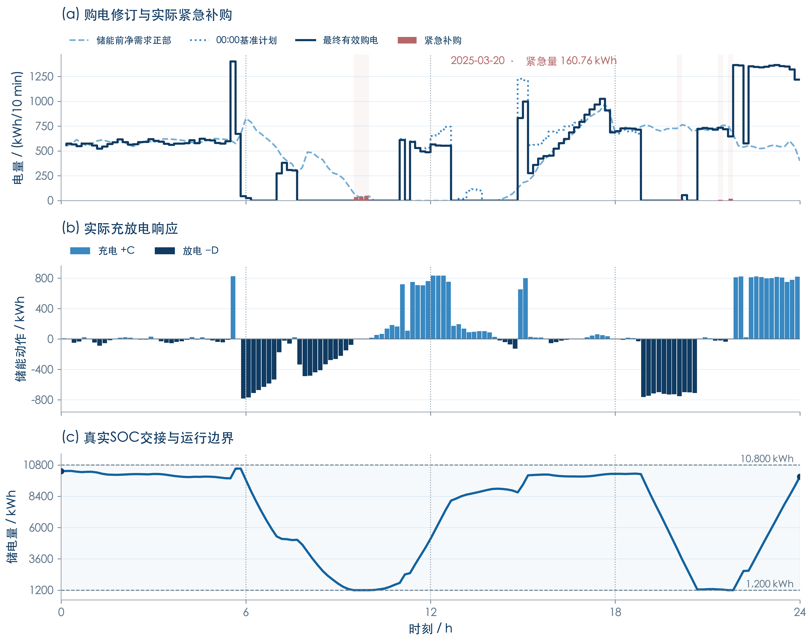
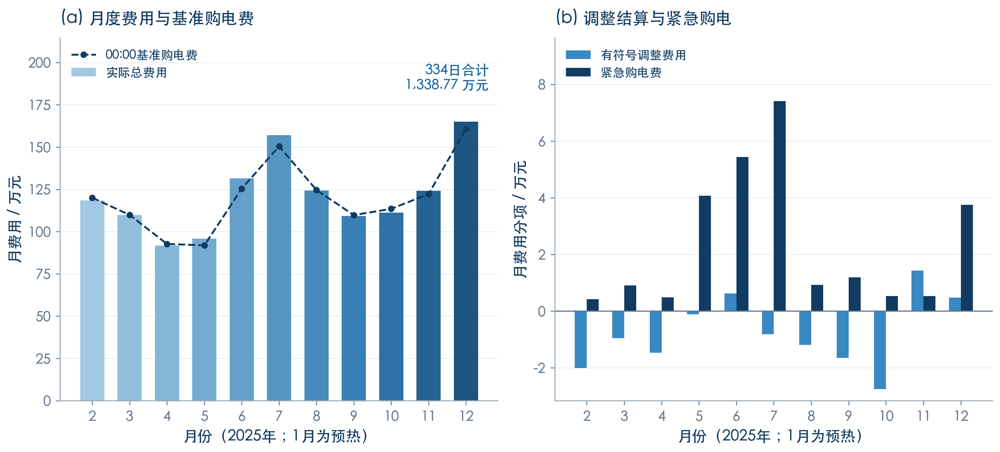
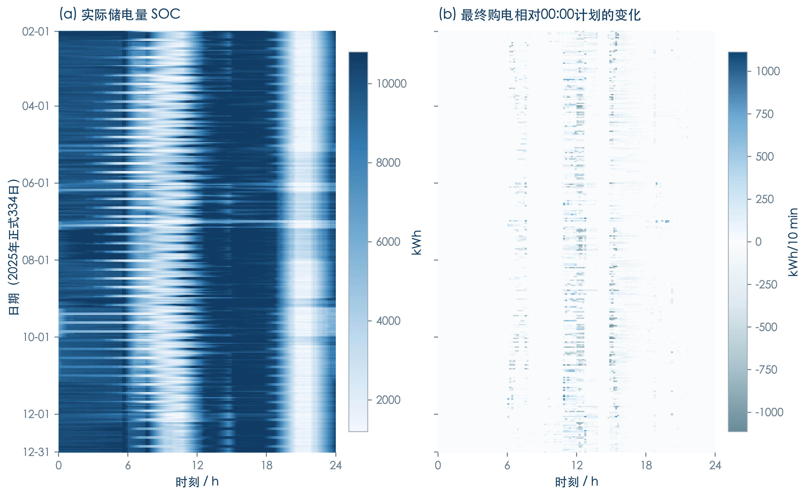
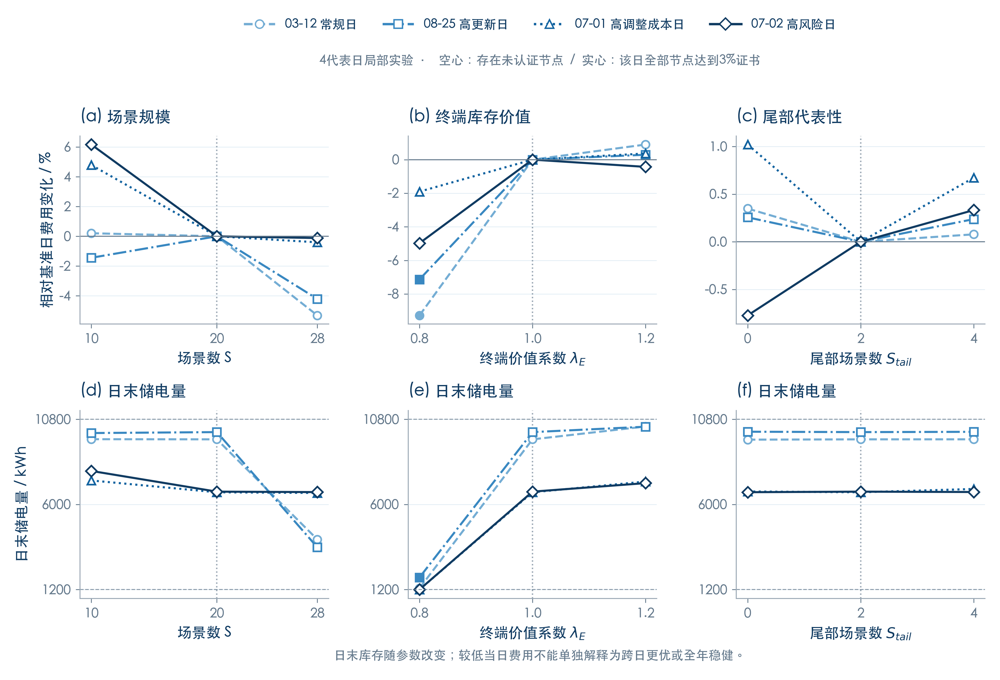

第三问 · 预测更新与滚动调度
6张正文图 + 1张敏感性附图 · 多强度蓝色 · 400dpi PNG / SVG · 已有真实结果
图6-1 四时点光伏预报质量与同目标更新

共同预测起点为2025-02-01至12-30的333日，每个热图单元n=333，误差=官方小时预报−小时右端点实际功率。年末无真值目标不填充。右下图在每次更新后1至6小时的同一目标上比较上一时点预报与新预报，每时点1998对，包含夜间零功率目标。这是预测诊断，不是费用节约或信息价值估计。
SVG 矢量图 · PNG 原图图6-2 四节点滚动决策与最终有效量结算

每天00/06/12/18点更新信息并优化未来24小时，图中深色首6小时进入真实执行，后18小时仅暂定。下一个节点继承实际反馈后的SOC；储能动作在已确定节点策略下使用当前10分钟观测。图示为方法机制，不是性能数据。次日00点重新建立本日基准，最终有效购电量只对所属日g0计算一次调整结算。
SVG 矢量图 · PNG 原图图6-3 高预测更新日的预报与购电计划修订

2025-08-25为已完成敏感性方案预先选定的高预测更新日。上图连接附件3的小时预报点，仅显示当天剩余目标，非10分钟插值的误差检验；实际曲线为10分钟观测。下图显示各节点24h策略在当日的部分，粗深蓝曲线逐段取各节点首36时段，与正式dispatch完全一致。竖虚线为6/12/18点。不同信息集、SOC和求解状态共同影响计划，不能由本图估计因果信息价值。
SVG 矢量图 · PNG 原图图6-4 压力代表日购电与储能真实运行

2025-03-20为题目指定3/20、6/21、9/23、12/21中正式紧急量最高日；紧急量160.761910kWh。柱高使用原值，淡红仅标记事件时段。净需求正部为max((负荷−光伏)/6,0)，不是最终购电。实际SOC含日初145点，效率两侧0.9，界限1200–10800kWh。竖虚线为信息更新节点；未将所有节点声称为严格最优。
SVG 矢量图 · PNG 原图图6-5 正式334日月度费用结构

仅2025-02-01至12-31正式334日。实际总费用=00点基准购电费+有符号调整费用+紧急购电费；下调结算可为负值，因此右图保留零线下方。两面板纵轴尺度不同，分别显示主体费用与较小分项。负调整结算不是总利润；没有将0点基准计划的购电费当作不更新策略的反事实总费用。
SVG 矢量图 · PNG 原图图6-6 正式期储能状态与购电修订图谱

每个像素对应一天的一个10分钟时段，共334×144点；不平滑，不补1月。左图为时段末储电量并固定物理色标1200–10800kWh。右图为最终有效grid−本日g0，蓝色为上调、蓝灰为下调、白色为零；色标按真实最大绝对值对称展开，保留全部极端值。00–06首执行块差值为零是原结算与执行机制的结果。
SVG 矢量图 · PNG 原图附图S3-1 场景与终端价值的局部敏感性

复用已完成Q3四代表日实验，每列三水平均采用同日日初SOC和固定28条真实历史池，S按用户确认取10/20/28。尾部数0/2/4，终端系数0.8/1/1.2。虚竖线为基准，费用变化按同日基准分母计算；点间连线只辅助阅读，不代表中间参数已计算。空心点存在未认证节点，实心为四节点均达到3%证书。三个因素共24变体+12基准记录，22变体存在未认证节点，四基准日亦未全部认证。终端库存不同，不能直接外推全年经济性。
SVG 矢量图 · PNG 原图